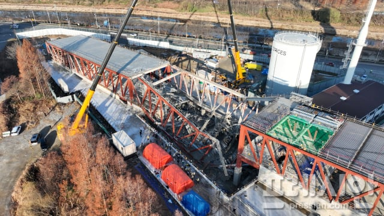
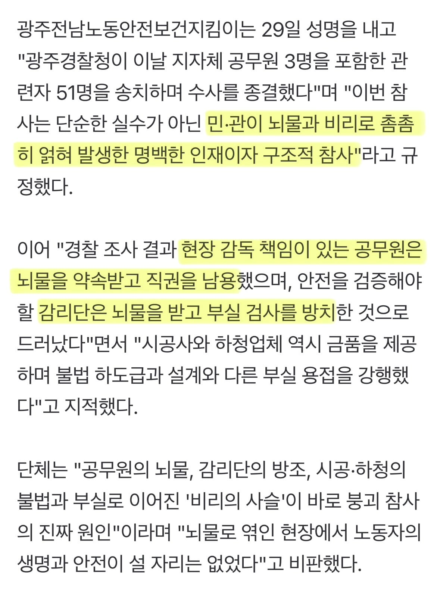

https://n.news.naver.com/mnews/article/002/0002463412
주위에 아는 사람도 없고 진짜 조용한 사건..
사고가 나도 대기업 현장이나 수도권에서 나야 언론에서 도와줌


https://n.news.naver.com/mnews/article/002/0002463412
주위에 아는 사람도 없고 진짜 조용한 사건..
사고가 나도 대기업 현장이나 수도권에서 나야 언론에서 도와줌
자 눈감아줬다가 사고 터지면 어떻게 되는지 저 기사가 보여줌… 자기 살길이
막힘
순살아파트 ㅈㄴ지어서 뉴스에 나왔었잖음
구조역학적인 보강 없이 끝날리 없음….
보강으로 안될거면 허물어야함
그거 묻었다가 문제가 또 터진다…?
저기 51명처럼 되는거야
와 얼마나 달달하면 51명이나
처벌 결과가 어떻게 진행되는지 관심있게 봐야지
저동네에서 몇년전에 아파트도 짓다가 부실로 붕괴하지 않았나
맞음
와 진짜 조용하게 넘어갔나보네
아직도 뇌물을 쳐받냐 신기하네
광주는 공무원부터 ㅅㅂ 일을 안함.
일배아니고 광주태생이라 더 잘안다. 이놈의동네는 시발 바뀌질않음
공무원이 일을 안하는게 아니라 의지를 박탈당한거임
뭔가를 시행하면 주민들이 협조해야하는데 그쪽은 일단 정부지침은 일단 부정적으로 받아들이는부분이 있어서 상대적으로 조금만 불리한게 있으면 들고일어나거든
그리고 지자체장은 그걸 또 들어주니까 공무원들이 지방정책을 만들어도 어차피 엎어질걸 아니까 애초에 안해버리는거임
카르텔이 있나봄
이런거나 조지지
이제 뇌물이 아니라 관행이였다. 하려나? ㅋㅋㅋㅋㅋ
이거 그건가 안전관리자 올라갔다가
저동네는 유독 비리유착 이슈가 많은것 같은데. 전에 건물 무너진것도 그렇고
우덜이 남인가
쌍팔년도도 아니고... 감리도 시공도 눈 안감아줍니다
시대를 관통하는 명언임 ㅋㅋㅋ